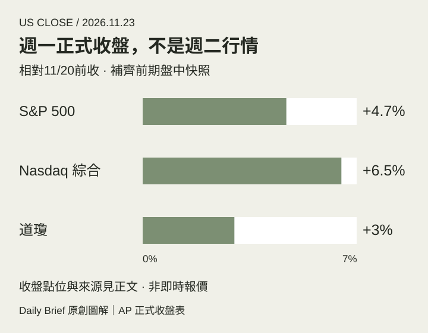

MARKETS / THE ESSENTIALS
美股 11/23 正式收盤：Nasdaq 漲 6.5%，補齊前期盤中數據
收錄於 2026-11-25 日報 · AP 正式收盤報導／LA NACION轉載
已確認的事
- AP 正式收盤表列美國 11 月 23 日交易日：S&P 500 收 7,237.17、漲 4.7%；Nasdaq Composite 收 24,089.56、漲 6.5%；道瓊收 49,595.31、漲 3.0%。比較基準皆為 11 月 20 日前收，收盤時間相當於臺灣 24 日清晨。
- 此資料補齊前期尚未確認的最終結果；黃仁勳復職及 AI 類股反彈為當日報導的市場歸因，並非已證明唯一原因。
影響與限制
- 正式收盤能避免混用盤中漲幅判斷反彈規模。 本則不是美國11/24收盤，不延伸成投資建議或趨勢已反轉的判斷。
後續更新：由前期11/23美東14:45盤中快照，補為同一交易日已完成的正式收盤數據；非新增另一日反彈。

原文與查核
以上為整理與解讀，重要細節請回到原文核對。
- AP 正式收盤報導／LA NACION轉載 ↗發布 2026-11-23 · 查核 2026-11-25T05:04:28+08:00